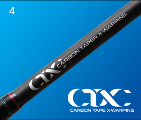
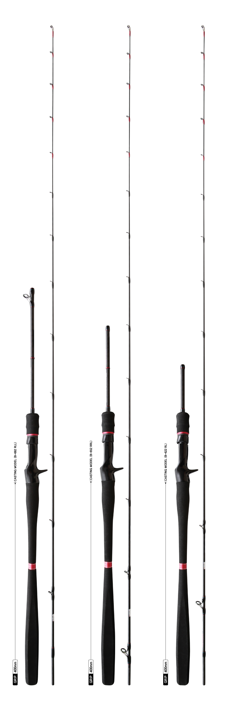

3.One-grip at the bottom of grip increases convenience and minimizes scratches during the use of holder on board a ship

BLANK TECHNOLOGY
4.Adopting the CTX, it provides ultra-high strength and highest sensitivity
hurricane-x rabaraba
Model
Lenght (m)
Section (pcs)
C.Length (cm)
Weight (g)
Top Dia (mm)
Butt Dia (mm)
JIG wt. (g)
P.E LINE (lb)
Guide (ea)
Grip (mm)
Retail Price (w)
B-652M
1.95
2
130
134.6
1.8
9.3
60~100
2.4~6.0
10
400
170,000
B-672MH
2.00
2
130
141.5
1.9
9.5
70~150
3.2~7.0
10
400
175,000
B-692H
1.95
2
130
148.0
2.0
10.0
80~180
4.0~8.0
10
400
180,000
A unique blend of affordability and high performance, optimized for red seabream tairaba
This fishing rod is ideal for Korean-style red seabream. Red seabream with dentary bone tenaciously bites the bait without inhaling it. At this time, the high sensitivity of blank optimized for red seabream tairaba allows the angler to detect both strong bite and light of bite of red seabream and set the hook. Adopting the CTX, this model has excellent elasticity. The blank design, which prevents twist of blank, adopted high-durability Fuji guide and further increased affordability. Moreover, it applied the highly portable O&H.
B-622 RL (GRIP 400mm)
The strong action of blank significantly increases the ease of handling the heavy tairaba. This model is optimized for operation of heavy tairaba even in deep sea with fast tidal current, such as the seawaters of Wondo, Jeju-do, etc.
B-652 RRL (Grip 400mm)
It is the best model for probing purpose! The action of blank is ideal for probing vast range of points. Featuring the tairaba with certain weight, it is a standard model that can be used in any part of the sea!
B-682 RLL (Grip 400mm)
It also provides the smoothest action of blank and optimized for operation of the lightest fishing tackle. Although the rod is slender, it provides capability to land large-sized red seabream and high maneuverability.

CTX Method
In order to reinforce the compressive strength that is the weakest point for the carbon thread with type of Uni-Direct, 24 or 30 tons Carbon tape is wrapped with the shape of X at regular pitch in the outermost of the blank. This is the method to reinforce the compressive strength with the great exterior.